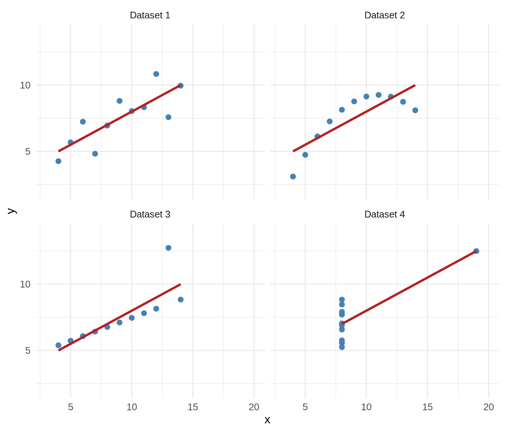
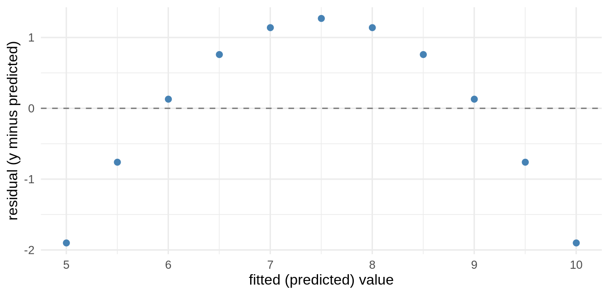

We want to emphasize that most of our work relies heavily on covariance structures. Everything from correlation to regression to ANOVA to structural equation models is, at bottom, an argument about how variables vary together. So before we build models, we need to understand the raw material they are built from. Variance measured how a single variable spreads around its own mean; covariance measures how two variables spread around their means at the same time.
6.1 Learning Objectives
See covariance as the natural two-variable extension of variance.
Compute and interpret a covariance, and understand its units problem.
Standardize covariance into correlation, and know what correlation can and cannot tell you.
Recognize covariance as the engine beneath the General Linear Model.
6.2 Why Start With Causes?
Science usually begins with a hunch about a cause: sleep affects mood, study time affects grades, a drug affects recovery. We cannot see causes directly; we can only watch variables move. If X truly drives Y, then when X is high we expect Y to be high (or low) systematically - the two should co-vary. Covariance is our first, humblest measurement of that co-movement. It cannot prove the cause (that famous warning is coming), but a cause that leaves no covariance behind is a cause with no evidence.
6.3 From Variance to Covariance
Recall variance: the average product of a deviation with itself, \(\frac{\sum(x-\bar x)(x-\bar x)}{n-1}\). Covariance makes one small change - it multiplies each variable’s deviation by the other’s:
Think about the sign of that product. When a point is above the mean on both variables (or below on both), the two deviations share a sign and their product is positive. When it is high on one and low on the other, the product is negative. Sum them up: mostly-positive products mean the variables rise together; mostly-negative means one rises as the other falls.
NoteWorking in SPSS, Julia, or Python?
The code tabs below assume this chapter’s data is already loaded. Grab the one-file setup for your language from Getting the Book’s Data, run it once, then load what you need by name - this chapter uses ch06-study, ch06-anscombe, ch06-restriction. For example, book_data("ch06-study") in R, Julia, or Python, or !bookdata name = "ch06-study". in SPSS. Every language reads the same shipped files, so your numbers will match the ones printed here exactly.
Figure 6.1: Each point coloured by the sign of its deviation product. Points whose deviations agree push covariance up; the rest push it down.
The blue points (agreeing deviations) dominate, so covariance is positive. That picture is covariance.
6.4 The Units Problem, and the Fix: Correlation
Covariance has a serious drawback for interpretation: its size depends on the units. Measure grade in points versus proportions and the covariance changes a lot, even though the relationship is identical. This is the same units problem the standard deviation had, and we fix it the same way, by standardizing. Divide covariance by both standard deviations and you get the correlation coefficient, \(r\):
import pandas as pddf = pd.read_csv("data/sim/ch06-study.csv")df.study.corr(df.grade)
Correlation is covariance stripped of its units, squeezed onto a fixed scale from \(-1\) (perfect negative) through \(0\) (no linear relationship) to \(+1\) (perfect positive). Now the number means the same thing whatever the variables - which is why \(r\), not raw covariance, is what we report.
6.5 What Correlation Will Not Tell You
Two lasting warnings. First, the familiar one: correlation is not causation. Ice-cream sales and drownings correlate (both driven by summer heat), but ice cream does not cause drowning. Second, and less appreciated: \(r\) measures only the linear part of a relationship. A strong curved relationship can produce \(r \approx 0\). This is why we told you to always plot your data - the single number can hide the whole story:
# a perfect U-shape: strong relationship, ~zero correlationu <-tibble(x =seq(-3, 3, length.out =100)) |>mutate(y = x^2)u |>summarise(correlation =cor(x, y)) |>round2() # ~0, yet y is fixed by x!
Figure 6.2: A perfect U-shaped relationship with a correlation near zero. Pearson’s r measures only the linear part of a relationship.
6.6 Anscombe’s Quartet: Same Numbers, Four Different Stories
The U-shape above was one warning. Here is the most famous one, and the reason “always plot your data” belongs on the first page of every statistics course. In 1973, Francis Anscombe built four small datasets that share almost every summary statistic you would normally report - the same mean of \(x\), the same mean of \(y\), the same variances, the same correlation, and the same regression line - yet describe four completely different worlds. R ships them in the built-in anscombe data:
# stack the four datasets into one tidy frame with columns set, x, yans <- anscombe |>as_tibble() |>pivot_longer(everything(),names_to =c(".value", "set"),names_pattern ="(.)(.)")ans |>summarise(correlation =cor(x, y), .by = set) |>round2()
set
correlation
1
0.82
2
0.82
3
0.82
4
0.82
Four identical correlations, \(r = 0.82\). Every set also has the same fitted line, \(\hat{y} = 3 + 0.5\,x\). If you reported only the numbers, you would call these datasets interchangeable. Now plot them:
ggplot(ans, aes(x = x, y = y)) +geom_point(colour ="steelblue", size =2) +# the SAME fitted line every timegeom_smooth(method ="lm", se =FALSE, colour ="firebrick") +facet_wrap(~ set, labeller =labeller(set = \(s) paste("Dataset", s))) +coord_cartesian(xlim =c(3, 20), ylim =c(2, 14)) +theme_book()

Figure 6.3: Anscombe’s quartet: identical means, variances, correlation, and regression line — but four different stories.
The same red line runs through all four, but only the first tells the story the line claims:
Dataset 1 is a genuine, if noisy, straight-line relationship. The line fits.
Dataset 2 is a smooth curve. A straight line is the wrong model here; the correlation is real, but the shape is not linear.
Dataset 3 is a tight straight line spoiled by a single outlier that drags the fitted line off course.
Dataset 4 has no relationship among most of the points (they all share one \(x\) value); a single far-off point, on its own, creates the entire correlation. That lone point has enormous leverage.
Identical statistics, four different truths. The picture told you in a moment what the correlation coefficient never could. This is why the graphical display of data is not decoration; it is often the fastest way to catch a relationship that is curved, contaminated, or driven by a single point.
ImportantFrom the picture to the residuals
Look again at what the scatter plots did: they showed you where the straight line was wrong. That is exactly the job of a residual. Recall the chain that runs through this book. We began with dispersion, how a variable spreads, and dispersion is the raw material of uncertainty. Once we start making predictions, that uncertainty splits into two pieces: the predicted value\(\hat{y}\), what the model expects, and the residual\(y - \hat{y}\), what the model missed. The residuals are where the model is wrong, and it is the residuals, not the fit, that tell you whether the model is any good and whether your assumption of a straight-line relationship holds.
Fit a line to the curved Dataset 2 and plot the residuals, and the curve the correlation hid comes right back:
m2 <-lm(y ~ x, data =filter(ans, set =="2"))augment(m2) |># broom: fitted values and residuals as columnsggplot(aes(x = .fitted, y = .resid)) +geom_hline(yintercept =0, linetype ="dashed", colour ="grey50") +geom_point(colour ="steelblue", size =2) +labs(x ="fitted (predicted) value", y ="residual (y minus predicted)") +theme_book()

Figure 6.4: Residuals from a straight line fitted to Anscombe’s second dataset. The arch is the curve the correlation hid.
The residuals bow upward at the ends and dip in the middle, the signature of a curved relationship forced through a straight line. The scatter plot and the residual plot told the same story.
Here is why that matters far beyond four small datasets. With two variables you can see a bad linear fit directly in the scatter plot. But real models carry many predictors, and you cannot plot a relationship in five or ten dimensions. Anscombe’s quartet stops being usable the moment you reach multiple regression, because there is no two-dimensional picture left to draw. What survives is the residual. Residual analysis carries the “look at where the line is wrong” habit from the simple scatter plot into models too complex to plot. So treat Anscombe’s quartet as a bridge, not a destination: it teaches, in pictures anyone can read, the very thing you will later have to check with residuals once the pictures run out.
6.7 Variance Is the Fuel
One more idea deserves its own heading, because it runs underneath everything in this book: to covary, two variables must first vary. Covariance is built from deviations, \((x - \bar{x})(y - \bar{y})\), so if \(x\) barely moves there is nothing to multiply and no covariance to find, however strong the true relationship. A blunt but useful heuristic follows: the best predictors are usually the ones with the most variance, because a predictor pinned near a single value cannot explain anything.
The practical consequence is restriction of range: sample only a narrow slice of a variable and you shrink its variance and, with it, the correlation you can observe, even though the real relationship is unchanged. Watch a genuine correlation collapse when we keep only the middle of \(x\):
set.seed(2)rr <-tibble(x =rnorm(1000)) |>mutate(y =0.6* x +rnorm(1000, sd =0.8)) # a real relationshipbind_rows( rr |>summarise(range ="full", correlation =cor(x, y)), rr |>filter(between(x, -0.5, 0.5)) |># keep only a narrow band of xsummarise(range ="restricted", correlation =cor(x, y))) |>round2()
range
correlation
full
0.62
restricted
0.23
Same data-generating process, same underlying relationship, but the restricted-range correlation is a fraction of the full one. This is why a study of only high-scoring students finds weak predictors of success (everyone is already high), and why a lab that tests a narrow slice of the population can miss an effect that is real in the wider world. It cuts the other way too: unreliable measures add error variance that dilutes the true signal, attenuating relationships for the same underlying reason. So a recurring question in careful analysis is simply where is the variance, and how much of it is there? Variance is the fuel every relationship in this book runs on.
ImportantCovariance Is the Engine of the GLM
Here is the payoff that carries into the rest of the book. The slope of a simple regression is literally covariance divided by variance:
import pandas as pddf = pd.read_csv("data/sim/ch06-study.csv")import statsmodels.formula.api as smfb_from_cov = df.study.cov(df.grade) / df.study.var()smf.ols("grade ~ study", data=df).fit().params
They match exactly. Regression, correlation, and everything downstream are built from covariance. When we say the General Linear Model “models covariance structure,” this is what we mean, and it is why this chapter is the real beginning of the modeling half of the book.
6.8 Challenge
TipDo One Yourself
Simulate two variables with a negative relationship. Compute their covariance and correlation by hand and confirm against cov() and cor(). What is the sign, and why?
Show numerically that cov(x, y) / var(x) equals the slope of lm(y ~ x) for your data.
Construct a variable pair with an obvious relationship but a correlation near zero (hint: make it nonlinear). Plot it, and write one sentence on why reporting only \(r\) would mislead a reader.
6.9 Where We Go Next
We now hold the engine (covariance) but have not yet built the machine. Before we assemble full models, a short detour to make sure our sensors are trustworthy: are our measurements reliable and valid? A model built on a broken ruler predicts nothing, no matter how strong the covariance looks.